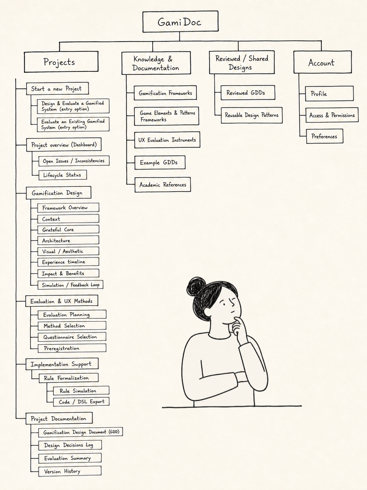
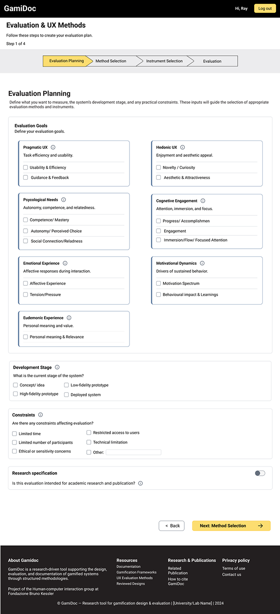
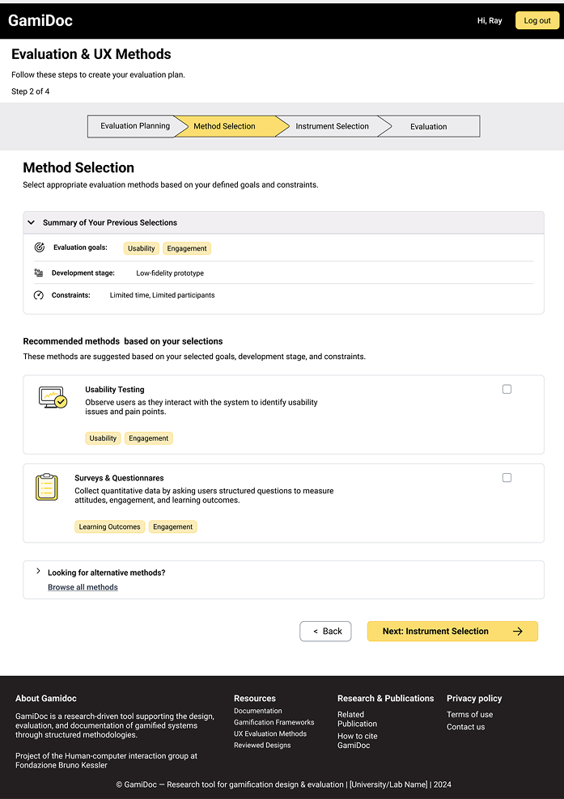
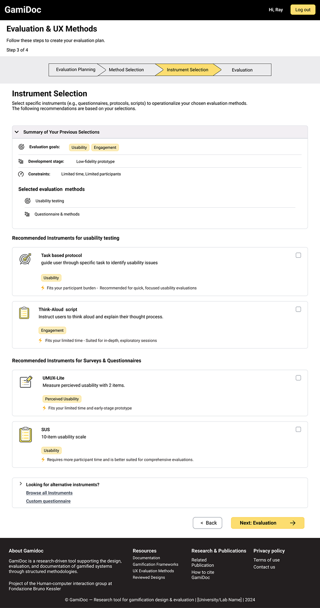

Case Study
GamiDoc Evaluation Planning Flow
Redesigning GamiDoc from a resource archive into a guided evaluation planning workflow.
GamiDoc is a web-based tool that supports researchers, educators, and practitioners in designing, documenting, and evaluating gamified systems. My work focused on improving the structure of the tool and designing a guided flow that helps users plan UX evaluations more clearly.

Problem Statement
Users did not know where to start in GamiDoc.
While reviewing the previous version of GamiDoc and the feedback collected from earlier studies, I noticed that the problem was not only visual. The tool contained useful resources, but users were not guided through a clear process. As a result, it was difficult to understand how the different sections were connected and how to move from general knowledge to concrete project decisions.
I wanted help choosing the right method.
When I followed links, I lost my progress.
It feels more like a textbook than a tool.
I did not know where to start.
Main Insight
The issue was not only visual, but structural.
I redesigned GamiDoc’s information architecture to move it from a feature-centered and archive-centered structure to a more project-oriented workflow. This helped position evaluation planning as part of the user’s project lifecycle rather than as a separate reading section.
- Made the system easier to understand and navigate.
- Organized new features within a clearer structure.
- Turned evaluation planning into a dedicated workflow.
- Allowed users to return to the right phase of their project later.

Design Focus
From structural redesign to evaluation planning
After presenting the new information architecture, the ideas were well received by the team. However, because GamiDoc is a large system and the internship time was limited, I narrowed the scope to one concrete feature: Evaluation Planning.
Why this focus?
- It addressed a key gap in the previous system.
- It connected directly to the user’s project workflow.
- It turned UX knowledge into step-by-step guidance.
- It was feasible to prototype and test during the internship.
Feature Design
Designing the Evaluation Planning Flow
I designed Evaluation Planning as a step-by-step flow inside the user’s project. Instead of only reading about methods and questionnaires, users are guided through key choices such as their evaluation goals, project stage, constraints, and suitable methods or instruments.

Prototype Design
From flow to interactive prototype
After defining the flow, I translated it into wireframes and then into a high-fidelity prototype. The prototype was designed to feel guided but still flexible: users could follow the recommended path, browse available methods, or manually select what best matched their project.



Design Decisions
Key decisions behind the prototype
To make the Evaluation Planning flow useful in practice, I focused on guidance, flexibility, and a concrete final output. The goal was not only to show information, but to help users make better evaluation decisions.
- Step-by-step guidance: breaking the process into smaller decisions.
- Project-based choices: starting from the user’s goals, stage, and constraints.
- Flexible navigation: allowing users to follow recommendations or browse manually.
- UX Archive as support: using the archive as a knowledge source.
- Concrete output: turning choices into an evaluation plan.

User Testing
Validating the Evaluation Planning Prototype
To evaluate the prototype before implementation, I conducted a remote moderated user test with 14 participants. The study combined quantitative measures, including UMUX-LITE and rating-scale questions, with qualitative open-ended feedback.
The result suggested a good level of perceived usability and showed that the guided structure was generally well received.
Key insights
- Users appreciated the clear step-by-step structure.
- Participants valued personalized recommendations.
- Some users needed clearer explanations for terms and recommendations.
Implementation
From prototype to front-end development
After validating the prototype, the project moved into implementation. The Evaluation Planning flow is being developed in React and JavaScript as part of the GamiDoc web platform. I am contributing to the front-end implementation by translating the prototype into reusable components and interactive steps.
This case study is ongoing and will be updated after the feature is completed and evaluated through a second user study. The project is also being developed into a research paper documenting the design process, prototype evaluation, and implementation.